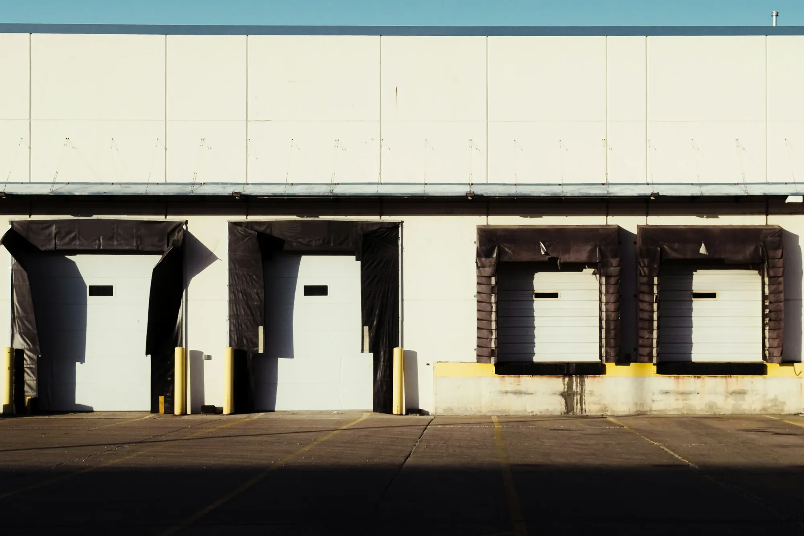

Vicino al casello
Dal piazzale all’autostrada ci vogliono pochi minuti. I camion non attraversano il centro del paese.
Chi siamo
Chiaravia Trasporti e Logistica è un’impresa di trasporto merci con sede a San Ferlino, in Piemonte. Camion dedicati, spedizioni di pallet e colli, magazzino in conto terzi: una sola squadra per far arrivare la tua merce.

Dove siamo
San Ferlino è un paese di fantasia in Piemonte, scelto per questa demo. Il piazzale e il magazzino che descriviamo qui non esistono.
Dal piazzale all’autostrada ci vogliono pochi minuti. I camion non attraversano il centro del paese.
San Ferlino è tra i campi della pianura e le prime colline: strade larghe e accessi facili per i mezzi pesanti.
Da qui i principali poli industriali e logistici del Piemonte si raggiungono in giornata.
Conosciamo bene le aziende della zona. Molte le serviamo da anni, con gli stessi autisti.
Chiaravia Trasporti e Logistica S.r.l. (azienda di fantasia) · Strada della Fornace 7, San Ferlino (Piemonte) · Dati di fantasia
Richiesta di preventivo
Raccontaci cosa deve partire e da dove. Ti rispondiamo con una proposta.
Richiedi un preventivoCarico dedicato · Pallet e colli · Logistica e magazzino